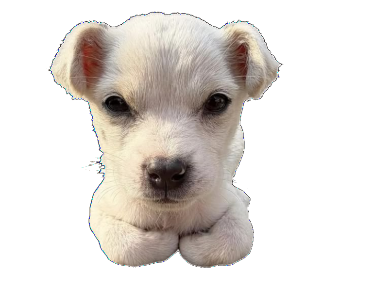

중간고사 범위 1 ~ 8장 (혁신이란 → 패턴 → 유형·원천 → 누가 혁신? → 전략 → 플랫폼 → 수익화 → IP 보호) 을 슬라이드 문장 그대로 빠짐없이 정리한 공부 노트. 퀴즈와 모의고사는 시험처럼 전부 객관식이에요.

이석희 교수 (제10공학관 10603호)
화·목 09:00 – 10:15, 10공학관 303호
대면수업
Melissa A. Schilling, 『기술경영과 혁신전략』, 맥그로힐에듀케이션코리아 (2023)
부교재: 박용태, 『기술과 경영』, 생능출판사 (2017)
| 출석 | 10% |
| 팀 발표 + 과제 | 15% + 10% |
| 중간고사 | 30% |
| 기말고사 | 35% |
테두리 강조 = 이 노트에 들어 있는 범위. 발표 주차의 기업 사례 Supplement 는 팀 발표 내용이라 강의 슬라이드만 넣었어요.
| 개념 | 외울 것 | 장 |
|---|---|---|
| Mark I / Mark II | 1911 『경제발전의 이론』 기업가·entrepreneurial / 1942 『자본주의, 사회주의, 민주주의』 대기업·routinized | 01 |
| Solow | \(Y = A K^{\alpha} L^{1-\alpha}\), A = TFP, α ≈ 0.3–0.4 | 01 |
| R&D 구성 | 기초 5–20% · 응용 15–25% · 실험적 개발 65–85% | 01 |
| 장기파동 | 40–60년 주기, 점점 짧아짐 (60 → 55 → 50 → 40 → 30) | 02 |
| S-곡선 | 출현 → 급격한 성장 → 성장 둔화 → 성숙기 | 02 |
| PLC 경쟁 기반 | 유동기 성능 → 전환기 다양성(차별화) → 고착기 가격 / entries > · = · < exits | 02 |
| 로저스 | 2.5 · 13.5 · 34 · 34 · 16 (%), 캐즘 = 초기 수용자 ↔ 초기 다수 | 02 |
| 확산 모형 | \(p\) 선형 · \(p(N_t-N)\) 포화 · \(qN\) 지수 · \(qN(N_t-N)\) 로지스틱 (최대 \(N_t/2\)) · \((p+qN)(N_t-N)\) 배스 | 02 |
| 혁신 유형 4쌍 | 제품/공정 · 급진적/점진적 · 역량강화/역량소실 · 구조적/부품 | 03 |
| 애로우 | 인센티브 B(독점) < A(완전경쟁) < C(사회계획자), B 가 낮은 이유 = 자기잠식 | 04 |
| 독점 공식 | \(p = a - q\), 한계비용 c: \(q = \frac{a-c}{2},\ p = \frac{a+c}{2},\ \pi = \left(\frac{a-c}{2}\right)^2\) | 04 |
| InnovaPNU | 156.25 → 2025 (순이익 1868.75) · 급진적: c′ ≤ 50, F ≤ 625 | 04 |
| DMA | MAU 4,500만 / 매출 75억 유로 · 과징금 10% (반복 20%) | 04 |
| VRIN | Valuable · Rare · Inimitable · Non-substitutable | 05·08 |
| 혁신 전략 5요소 | 목표 · 중점 분야 · 혁신 유형 & 위험 · 예산 & 자원 · R&D 조직 | 05 |
| 70-20-10 | 핵심 70 · 인접 20 · 파격적 10 | 05 |
| 이상적 전략 | 선제적 DuPont·Apple · 활동적 MS·Dell · 대응적 Ryanair · 수동적 Ratiopharm | 05 |
| 구매자 효용 지도 | 구매·전달·사용·보충·유지·처분 × 생산성·단순·편리·위험·즐거움·친환경 = 36칸 | 06 |
| 이중마진화 | \(P_S = 1/2,\ q = 1/4,\ \pi_S = 1/8,\ \pi_{IN} = 1/16\), 총 3/16 < 통합 1/4, 가격 3/4 | 07 |
| Teece 매트릭스 | 강+독점 = 공유 · 강+경쟁 = 혁신기업 · 약+독점 = 자산 소유자 · 약+경쟁 = 소비자 | 07 |
| 특허 기간 | 출원일부터 20년 (제약·농약 25년) · 18개월 공개 · 등록 결정 평균 16개월 (EPO 약 4년) | 08 |
| 기타 IP 기간 | 디자인 출원일 20년 (연장 불가, 공개 후 12개월 내 출원) · 저작권 사후 70년 · 실용신안 10년 · 반도체 배치설계 10년 · 품종 20–25년 | 08 |
| 국제 출원 | 파리협약(1883, 181개국) 우선권 12개월 · PCT 각국 진입 30개월 · USPTO 유지료 3.5·7.5·11.5년 | 08 |